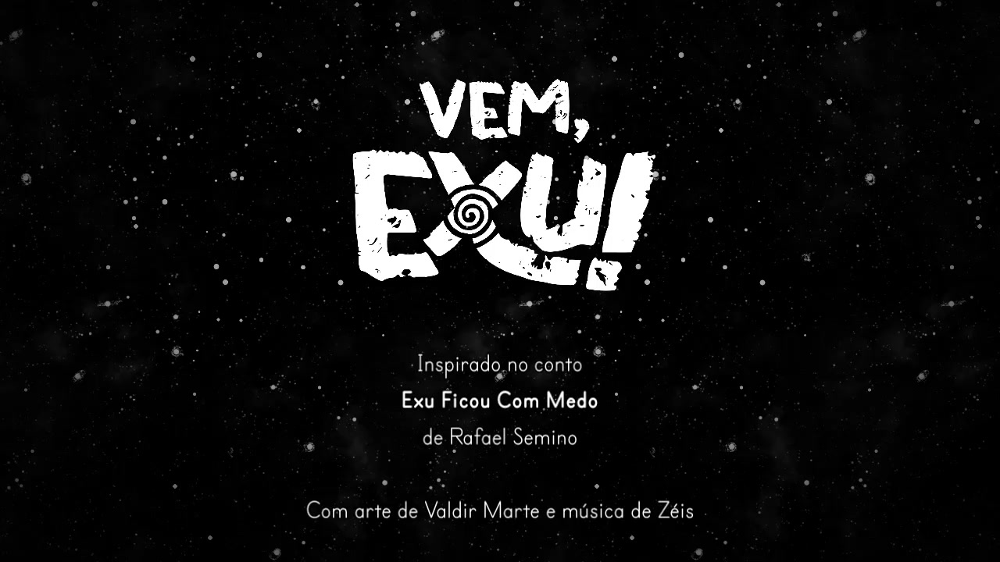
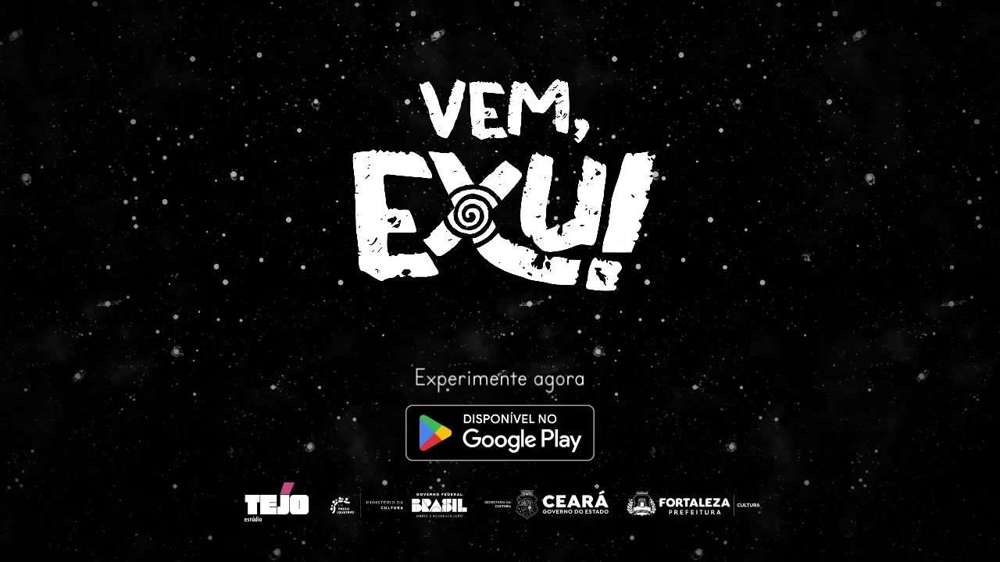

Press Kit
Vem, Exu
Depois de perder sua arraia, Exu enfrenta uma tempestade nascida da própria raiva.
Um conto interativo sobre orgulho, medo e uma arraia perdida.
- Trailer
- Ver e baixar
- Screenshots
- Abrir galeria
- Logos
- Baixar assets
- Contato
- Falar com o estúdio
Baseado no conto "Exu ficou com medo", do livro Contos de Exu, de Rafael Semino.

Quick Facts
- Nome
- Vem, Exu
- Gênero
- Narrativa interativa curta focada em emoção
- Preço
- Demo Gratuita / Jogo Final (A definir)
- Plataformas
- Android (Demo), Steam (Demo Julho 2026), Lançamento 2027
- Duração
- 50 minutos (uma sessão)
- Idioma
- Sem texto — compreensível universalmente
- Início do Projeto
- 2024
- Para fãs de
- Florence, Journey, experiências narrativas curtas
Sobre o Jogo
Depois de perder sua arraia, um menino entra em uma tempestade criada por sua própria raiva.
Sem conseguir dormir, Exu é levado a um mundo onde memória, imaginação e emoção se misturam.
A história é contada sem texto. Você entende tudo apenas interagindo com o ambiente.
Principais Destaques
- Sem texto — você entende jogando
- Emoções transformam o mundo
- Curto, acessível e sem pressão
- Interações simples e intuitivas
Jogabilidade
Interaja diretamente com o mundo usando gestos simples como tocar, arrastar e explorar.
- Conecte estrelas para formar constelações.
- Construa sua própria arraia.
- Voe com a arraia através do vento.
- Atravesse uma tempestade viva.
- Explore memórias que ganham forma.
A progressão acontece por curiosidade, observação e interpretação.
Media
Trailer
Screenshots






GIFs


Logos e Branding
Key Art

Personagens


Clipes Adicionais
Material de apoio para creators e redação.
História
Inspirado no conto Exu Ficou Com Medo, do livro Contos de Exu, de Rafael Semino.
Após perder sua arraia em uma briga com o irmão, Exu tenta dormir carregando raiva.
Durante a noite, seus sentimentos dão forma a uma tempestade onde sonho e realidade se misturam.
Ao atravessar esse mundo, ele precisa enfrentar o próprio orgulho e lidar com o que sente para conseguir voltar.
Diferencial
Direção de Arte
Preto e branco com vermelho como emoção.
Inspirado em cordel, xilogravura e arte brasileira.
Referências:
- Literatura de cordel
- Xilogravura
- Ilustrações do livro original
O vermelho representa a própria energia emocional de Exu e marca momentos-chave da narrativa.
Som e Música
Trilha original reativa às ações do jogador.
Influências afro-brasileiras e sonoridades do Ceará.
- Percussão e sopro
- Influências afro-brasileiras
- Referências regionais do Ceará
A música reage às ações do jogador e à intensidade da tempestade.
Elementos de voz são utilizados como textura, sem diálogos.
Sobre a Obra Original
Baseado no conto Exu Ficou Com Medo, do livro Contos de Exu, de Rafael Semino.
A obra explora memória, identidade cultural e narrativas simbólicas através de uma releitura ficcional do personagem Exu.
Equipe
Michael Feitosa
Game Design, Programação, Direção Criativa
Game designer e desenvolvedor com mais de 15 anos de experiência em software. Coordena o Estúdio Tejo e lidera o desenvolvimento de Vem, Exu.
Rafael Semino
Roteiro
Ator, dramaturgo e pesquisador em artes. Mestre em Artes pela UFC e autor do livro Contos de Exu.
Valdir Marte
Ilustração e Arte
Ilustradora e designer gráfica com atuação em projetos editoriais e culturais.
Zéis
Trilha Sonora e Sonografia
Cantor, compositor, ator e produtor cultural. Em Vem, Exu, desenvolve uma paisagem sonora que conecta ritmo, emoção e interação.
Sobre o Estúdio
O Estúdio Tejo é um estúdio independente focado na criação de experiências narrativas e experimentais, explorando jogos como forma de expressão cultural.
Recepção
Durante testes e apresentações públicas, jogadores destacaram:
- A beleza visual
- A originalidade da proposta
- A representatividade cultural
O jogo demonstrou forte engajamento, especialmente entre crianças e pessoas não familiarizadas com jogos.
Espaço reservado para quotes, seleções e referências externas.
Figurinhas (Stickers)
Assets transparentes para uso em redes sociais e criação de conteúdo.


Call to Action
Contato
- tejoestudio@gmail.com
- @tejoestudio
- Threads
- @tejoestudio
- Livro
- Contos de Exu
- Steam
- Placeholder temporário até a página oficial entrar no ar.
- URL pública
- Placeholder temporário.
- Imprensa
- Disponível para imprensa, entrevistas e cobertura.